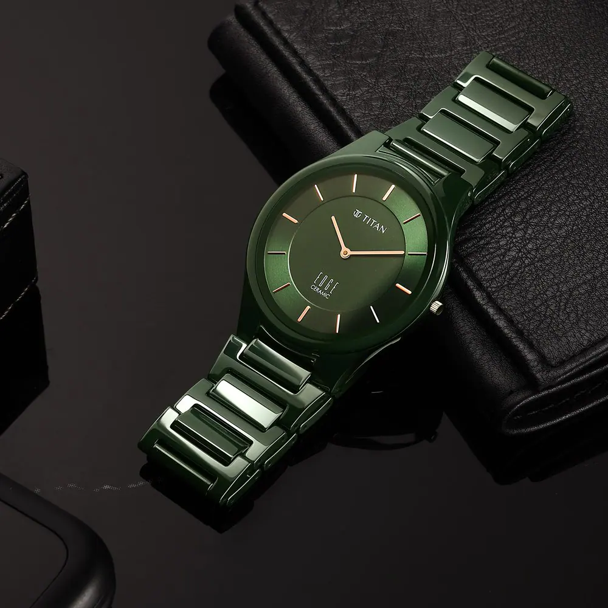
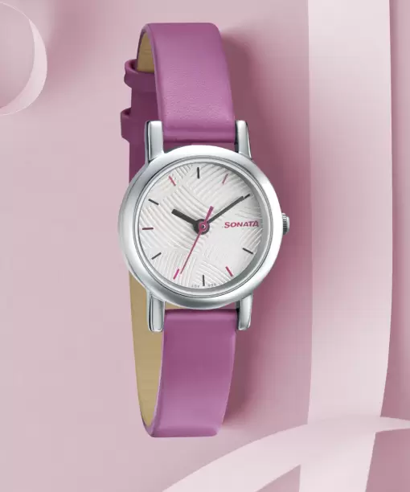

Titan has come a long way since 1984 when we started with
one product category. Today, with over 8,000
employees and about 38,000 in the overall Titan ecosystem, 16 brands and over 2,000 retail stores, we
are as committed as ever to delivering profitable and responsible growth for all our stakeholders.Titan
is India's leading lifestyle company and among the most admired and respected corporates in the
country. We have established leading positions in the Jewellery, Watches and EyeCare categories led by
our trusted brands and superior customer experience. we have also diversified into Wearables, Indian
Dress Wear and Fragrances & Fashion Accessories and are driving differentiation in these lifestyle
categories, underpinned by our deep understanding of customer preferences.
Titan is India's leading lifestyle company and among the most admired and respected corporates in the
country. We have established leading positions in the Jewellery, Watches and EyeCare categories led by
our trusted brands and superior customer experience. we have also diversified into Wearables, Indian
Dress Wear and Fragrances & Fashion Accessories and are driving differentiation in these lifestyle
categories, underpinned by our deep understanding of customer preferences.

Sonata
Sonata watches feature distinctive designs that are created
for a timeless style. Sonata timepieces come
in a wide variety of themes, with appealing features. Browse through several options to choose a watch
that suits your preferences. Explore a variety of watch designs with glistening gold chains and smart
leather straps. Analogue, digital, smart analogue, hybrid smartwatches, and analogue-digital are among
the available varieties. Additionally, you can choose from dial shapes like oval, rectangular, round,
tonneau, square, and asymmetrical. The watch brand offers smart and trending designs mixed with the
right amount of style that can be worn on special events or daily. Explore numerous watches in a wide
range of dial and strap colours and choose the ones that best match your sense of style. You may opt for
watches with latest features like a chronograph, date display, luminous, an altimeter, a calendar, and
more with these Sonata timepieces. Check the prices of the watches, as they may vary depending on the
features offered. The striking and elegant looks of Sonata watches capture the interest and aspirations
of individuals who are still youthful at heart. You can buy new Sonata timepieces online for yourself or
as a wonderful present for your loved ones. You can unwind while enjoying online shopping from the
convenience of your home. The information you are reading has been last updated on 19-Oct-23

SmartWatch
Smartwatch, a small smartphonelike device worn on the wrist.
Many smartwatches are connected to a smartphone
that notifies the user of incoming calls, e-mail messages, and notifications from applications. Some
smartwatches can even make telephone calls. Many smartwatches have colour displays, but some inexpensive
models use a black-and-white “e-paper” display. The user can operate the smartwatch through a touch
screen,
physical buttons, or a combination of the two. Some smartwatches come with pedometers and heart-rate
monitors to help users track their health.As computers shrank in size in the 20th century, electronic
equipment became small enough to fit into a
watch. One of the first calculator watches was the Calcron (1975), which had a nine-digit display. In
the
early 1980s, Seiko introduced several watches with computing capabilities. The Data-2000 (1983), so
called
because it could store two memos of up to 1,000 characters each, fit into a keyboard on which the user
entered information. The RC-1000 (1984) connected to a personal computer. The Receptor MessageWatch
(1990)
received pager messages via FM radio signals.